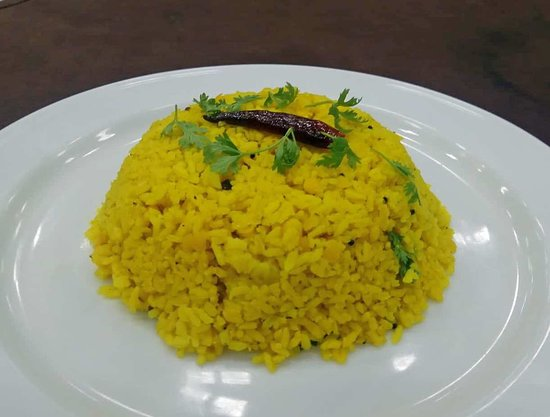

Khichuri (also spelled khichdi or khichri) is a classic South Asian one-pot meal made of rice and lentils. Highly customizable, it ranges from a soft, porridge-like comfort food to a dry, spiced pilaf. Often served with yogurt, pickles, or ghee, it is the ultimate "soul food" in India and Bangladesh.
Home